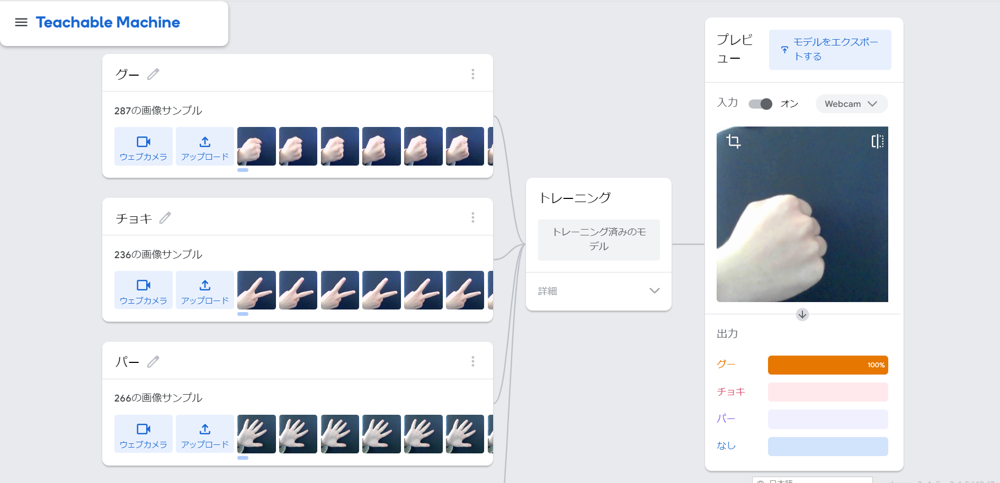

第2週目
2-1 １週目のレポートをHTMLで作る
１週目のレポート
1.内容
レポートのテンプレのhtmlをコピペして自分のサイトでレポートを作成しました。
2.感想
htmlの大まかな使い方はわかるようになり、達成感を感じれて面白かったです。
2-2 機械学習体験

1.内容
グー、チョキ、パー、何もない状態のそれぞれをカメラでAIに学習させました。
2.感想
背景を黒にすることでそれぞれの動作をしたときにほぼ100％になるようにすることができた。
2-3 VR（バーチャルリアリティー：Virtual Reality）の体験
1.内容
VRゴーグルを使用してオンラインミーティングに参加しました。
バーチャル空間内のホワイトボードにペンで書き込むことができた。
2.感想
初めてのVR体験で不安もあったが想像以上に自由度があって楽しむことができました。